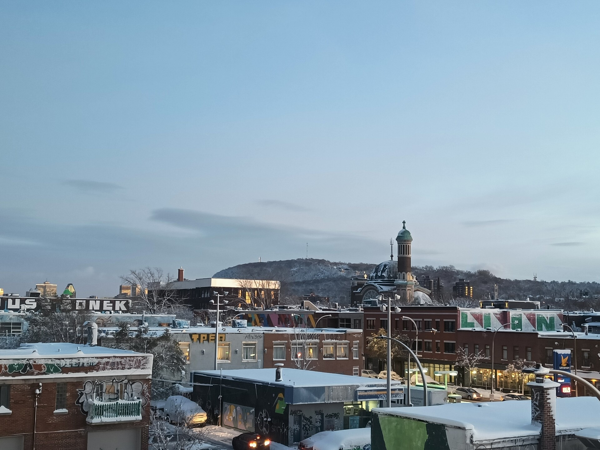

The weekend of 48 is in fact over
Hey yall! 4 week late Erik here with another blog update!
As expected, november was quite gloomy and boring. More or less nonstop studying, like 10 hours per day for weeks on end. Last weekend was the first since Madeline came to visit seven weeks ago that I didn't spend a day studying. So, the experience hasn't been the best since then. I really miss the mode of education at Uppsala. Here, we just do loads of classes with no practice sessions at all. So you "learn" a bunch of subject with no depth at all and no knowledge of how to use them. Either that, or there are endless labs where you troubleshoot the professor's awfully written code. Some snow came a couple of weeks ago and actually stayed for a good week and a half. That was nice. Then it got warmer and back to endless rainy and cold november days. My dad also came to visit two weeks ago, bringing loads of swedish food and candy. That was also really nice. At that point I was glad that I had studied so hard the weeks prior that I actually had some time to spend with him.
Another thing that definitely brightened my mood a bit was the exchange fair that the school organized. Essentially I had a stand where I yapped for a good 3 hours about how Uppsala is the best town every and how everyone should go there. I also met a really cool guy there that went on an exchange to Uppsala last spring. Too bad we have no time to hang out because of the stupid amounts of studies that we have to do. That has been a running theme the past month. There has been things I've wanted to do, like just exploring the city more, going on smaller concerts, musicals, whatever, but I have just not had neither the time nor the energy to actually to that and look up anything. My days have just consisted of going to school for the class of the day, and then going back to the apartment to study more/cook etc. I'm extremely thankful for having such nice flatmates that I can hang out with as much as possible atleast. But it has definitely been very tiring and isolating. We were gonna go on a trip to a lodge in the forest a week ago, but I ended up missing that due to a small cold that turned super awful presumably due to burnout or something. I was OUT that weekend.
At this point I just want the exchange to be over. I worked so hard to get here, just for it to end up awful because turns out french people are quite unfriendly towards non-french people(shocker!), and that my visa got hella delayed to the point that I missed all the welcome activities. And turns out, Korean visa application is like super duper easy and takes only two weeks or something. I can even apply here in Montreal. Quebec, please take notes when you gain independence.
I'm so ready to go home and not interact with a single french person for a good year or so.
Eriks concluding remarks and and observations
- This town is so incredibly hipster. It's basically like one big Södermalm. There is a new cafe that serves 6$ coffee in like every corner. Also, like every place in my vicinity has merch ?? Surely not that many people want to buy merch from the local bagel shop/donut shop/pizzeria/café ? Some of it does look kinda cool, but I'd never wear a tshirt saying Saint-Viateur bagel shop on it in Montreal. So maybe they bank on short-term residents buying t-shirts to seem hip and different when they leave town. I will sure be one of them.
- I got my hands on a super cool Quebec jersey !!! Litteraly best purchase like every ong fr !! I also got a bunch of stickers for Quebec independence at the same time !! Write in chat if want when I go back home !! It all came from the organization Projet Équipe Nationale, that are basically undraising for a national hockey team for Quebec. At some points it's kinda crazy how alive the independence movement is here. When I think of which country I am in, the first thing coming to mind is definitely Quebec rather than Canada. It's just prevalent everywhere. It's also kinda crazy how hardcore some people are about independence. There is a guy that I share two classes with that only talks French in class. And it's not like he cannot speak english -- I have spoken english with him without any problems. The classes are also in english. But whenever he asks a question, it's always in French. Sometimes he also comes to class with a Quebec flag tshirt. Hope bros having an amazing day.
- this take is redacted due to the risk of offending french people
- Building upon the hipster thing, keffiyehs are like a normal thing to wear as a piece of clothing here. I don't really know what to think about that. For one, of course it's good to show support for the cause. But at the same time, it kinda defeats the purpose if it just turns into a fashion symbol rather than an actual symbol of support and tie back to the roots of resistance. Though, if there is anywhere where it is actually justified it would be here, just based on the sheer number and sizes of palestine protests in this city. Also the white boy with a saviour complex should probably stop talking about cultural appropriation now.


You should also read:
The weekend of week 44 is almost over!
Hello blog! Another week, another blogpost!! This week has for sure had its ups and downs. All my midterms are done, and I have basically no school work (for now) except for catching up on everything I've missed from before. However, this doesn't stop me…
Continue reading...Quick Montreal Trip and Erik + Madeline Reunion! (Madeline’s Blog Takeover)
Hello, cutiepie blog! It’s Madeline, and I have just returned from a wonderful trip to see Erik in Montreal. You know what that means… I get to take over the blog for this week! Yippie! I couldn’t sleep very much on the plane, and, since…
Continue reading...
En kort Kanadaweekend
Jag blev utvisad ☠️ Resan började med tuppen 0630 på morgonen när flyget mot Amsterdam lyfte. Vi var framme 8:30 i Amsterdam och hade en 7 timmar mellanlandning innan planet mot Montreal skulle lyfta. Perfekt med tid för att åka in och utforska staden. Det första…
Continue reading...